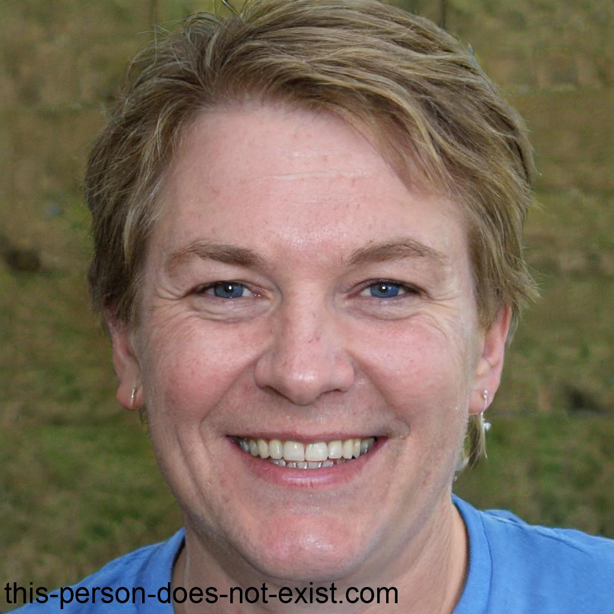

+10 000 students
100 trusted professors
100% of reinvestement in our student
Supporting Students at the fullest
At Efrei, we believe that academic success goes hand-in-hand with a supportive environment. Our faculty provides a comprehensive support network that includes personalized academic tutoring, professional career coaching to help secure internships, and dedicated mental health resources. Whether you are navigating complex course modules or preparing for your first international exchange, our administrative and teaching teams are available daily to ensure every student has the tools and guidance needed to reach their full potential.
Departement's

Department's director
Dr Aris Thorn Oversees the strategic vision and academic excellence of the engineering cycles.
aris.thorn@efrei.edu | [+33 1 23 45 67 89]
Department's Vice Director
Elena Vance manages international relations, corporate partnerships, and student life initiatives
elena.vance@efrei.edu | [+33 1 23 45 67 67]
Department Referent
Primary point of contact for student administrative support, enrollment, and academic records.
marc.solis@efrei.edu | [+33 1 23 45 67 91]
Professors :

Professor 1: Pr Sarah Jack
Specialization: Computer Networks and Distributed Systems.
Detail: Sarah leads research into high-availability cloud architectures. She is known for her hands-on labs involving real-world server configurations.
Key Course: Advanced Networking (NET401).
Computer Science, University of Toronto.
Experience: 5 years as a Senior Architect at AWS before joining Efrei.

Professor 2: Dr. El Monstro Smith Morjene
Specialization: Cybersecurity and Threat Intelligence.
Detail: With a background in military encryption, Dr. Morjene teaches students how to defend critical infrastructure against modern cyber-attacks.
Key Course: Ethical Hacking & Defense (SEC502).
PhD: Cryptography, ENS Paris—Specialized in "Lattice-based Encryption".
Experience: Former Lead Security Analyst for the French Ministry of Defense.

Professor 3: Dr. David Davis
Specialization: Data Science and Machine Learning.
Detail: David focuses on the ethics of AI and the implementation of large-scale data processing algorithms for sustainable technology.
Key Course: Big Data Analytics (DAT305)
PhD: Machine Learning, Carnegie Mellon—Focus on "Neural Network Interpretability".
Experience: Data Scientist at Google DeepMind for 4 years.

Professor 4: Pr. Kim Kimchi
Specialization: Software Engineering and DevOps.
Detail: Kim specializes in the automation of the software development lifecycle and teaches industry-standard CI/CD pipeline management.
Key Course: DevOps Methodologies (SFT201).
MSc: Software Engineering, MIT.
Experience: Lead Developer for a major Fintech unicorn in Berlin.

Professor 5: Dr. Davis David
Specialization: Embedded Systems and IoT.
Detail: His work focuses on low-power sensor networks and the integration of hardware with real-time operating systems.
Key Course: Microcontroller Programming (EMB410).
PhD: Computer Engineering, Georgia Tech—Focus on "Ultra-low Power Signal Processing".
Experience: Hardware Engineer at STMicroelectronics for 6 years..

Professor 6: Pr. Jeanne dark
Specialization: Human-Computer Interaction (HCI).
Detail: Jeanne explores the psychological impact of UI design, ensuring that future engineers build software that is accessible to all users.
Key Course: User Experience Design (UIX101).
Design Engineering, Royal College of Art—Thesis on "Cognitive Load in Mobile Interface Design".
UX Strategy Consultant for several Fortune 500 tech companies.